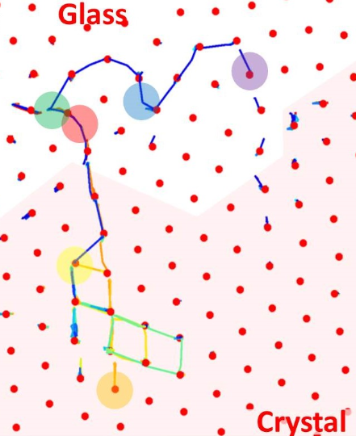
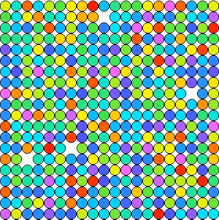
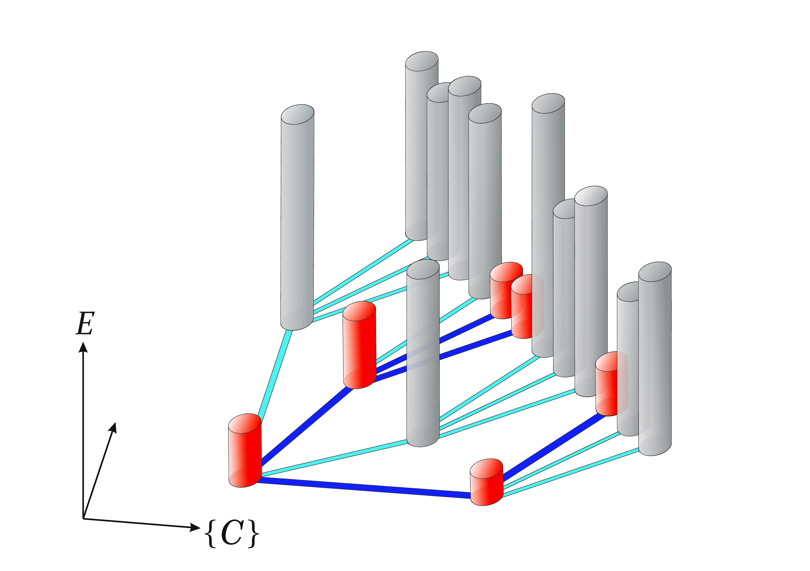

|
Department of Applied Physics
Hong Kong Polytechnic University
Hung Hom, Hong Kong.
Tel: 2766-5681, Fax: 2333-7629 E-mail: or |



Unified picture of structural relaxation, beta relaxation, and excess wing in glass formers, Chun-Shing Lee, Hai-Yao Deng, Linghan Zhang, Chu Xiao, Bo Li, Cho-Tung Yip, and Chi-Hang Lam, Physical Review E 112, 045422 (2025).
Distinguishable-particle Glassy Crystal: the simplest molecular model of glass, Leo S.I. Lam, Gautham Gopinath, Zichen Zhao, Shuling Wang, Chun-Shing Lee, Hai-Yao Deng, Feng Wang, Yilong Han, Cho-Tung Yip, and Chi-Hang Lam, Journal of Chemical Physics 163, 024505 (2025). (arXiv:2402.15805)
Penetration of surface effects on structural relaxation and particle hops in glassy films, Qiang Zhai, Hai-Yao Deng, Xin-Yuan Gao, Leo S.I. Lam, Sen Yang, Ke Yan and Chi-Hang Lam, Journal of Chemical Physics 162, 234502 (2025). (arXiv:2503.23428)
Emergent facilitation by random constraints in a facilitated random walk model of glass, Leo S.I. Lam, Hai-Yao Deng, Wei-Bing Zhang, Udoka Nwankwo, Chu Xiao, Cho-Tung Yip, Chun-Shing Lee, Haihui Ruan, Chi-Hang Lam, Physical Review E 111, 044120 (2025). (arXiv:2412.08986)
Heat capacity and relaxation dynamics of glassy films: A lattice model study, Qiang Zhai, Xin-Yuan Gao, Hai-Yao Deng, Chun-Shing Lee, Sen Yang, Ke Yan, and Chi-Hang Lam, Physical Review E 111, 015406 (2025).
Direct manipulation of diffusion in colloidal glasses via controlled generation of quasi-particle-like defects, Yi-Di Wang, Chu Xiao, Anupam Kumar, Yun-Hong Shi, Chun-Shing Lee, King-Cheong Lam, Man-Kin Fung, Chor-Hoi Chan, Yuen-Hong Tsang, Bo Li, Chi-Hang Lam, and Cho- Tung Yip, Physical Review E 110, 064603 (2024). (Editors' Suggestion)
Surface mobility gradient and emergent facilitation in glassy films, Qiang Zhai, Xin-Yuan Gao, Chun-Shing Lee, Chin-Yuan Ong, Ke Yan, Hai-Yao Deng, Sen Yang, and Chi-Hang Lam, Soft Matter 20, 4389 (2024). (arXiv:2402.11210)
Relating fragile-to-strong transition to fragile glass via lattice model simulations, Chin-Yuan Ong, Chun-Shing Lee, Xin-Yuan Gao, Qiang Zhai, Zhenhao Yu, Rui Shi, Hai-Yao Deng, and Chi-Hang Lam, Physical Review E 109, 054124 (2024). (arXiv:2211.15026)
The distinguishable-particle lattice model of glasses in three dimensions, Bo Li, Chun-Shing Lee, Xin-Yuan Gao, Hai-Yao Deng, and Chi-Hang Lam, Soft Matter 20, 1009 (2024). (arXiv:2305.08154)
Decoupling limit of diffusion and structural relaxation predicted by a fragility-tunable glassy model, Hairong Qin, Chun-Shing Lee, Chi-Hang Lam, and Yongjun Lü, Physical Review B 108, 104105 (2023).
Kauzmann Paradox: a possible crossover due to diminishing local excitations, Xin-Yuan Gao, Chin-Yuan Ong, Chun-Shing Lee, Cho-Tung Yip, Hai-Yao Deng, and Chi-Hang Lam, Physical Review B 107, 174206 (2023). (arXiv:2211.13511)
Diffusion coefficient power laws and defect-driven glassy dynamics in swap acceleration, Gautham Gopinath, Chun-Shing Lee, Xin-Yuan Gao, Xiao-Dong An, Chor-Hoi Chan, Cho-Tung Yip, Hai-Yao Deng, and Chi-Hang Lam, Physical Review Letters 129, 168002 (2022). (arXiv:2111.11697)
Emergence of two-level systems in glass formers: a kinetic Monte Carlo study, Xin-Yuan Gao, Hai-Yao Deng, Chun-Shing Lee, J. Q. You, and Chi-Hang Lam, Soft Matter 18, 2211 (2022). (arXiv:2109.02275)
Large heat-capacity jump in cooling-heating of fragile glass from kinetic Monte Carlo simulations based on a two-state picture, Chun-Shing Lee, Hai-Yao Deng, Cho-Tung Yip, and Chi-Hang Lam, Physical Review E 104, 024131 (2021). (arXiv:2106.08633)
Kovacs Effect in Glass with Material Memory Revealed in Non-Equilibrium Particle Interactions, Matteo Lulli, Chun-Shing Lee, Ling-Han Zhang, Hai-Yao Deng, and Chi-Hang Lam, Journal of Statistical Mechanics 2021, 093303 (2021). (arXiv:1910.10374)
Fragile glasses associated with a dramatic drop of entropy under supercooling, Chun-Shing Lee, Matteo Lulli, Ling-Han Zhang, Hai-Yao Deng, and Chi-Hang Lam, Physical Review Letters 125, 265703 (2020). (arXiv:1909.03240)
Direct evidence of void-induced structural relaxations in colloidal glass formers, Cho-Tung Yip, Masaharu Isobe, Chor-Hoi Chan, Simiao Ren, Kin-Ping Wong, Qingxiao Huo, Chun-Sing Lee, Yuen-Hong Tsang, Yilong Han, and Chi-Hang Lam, Physical Review Letters 125, 258001 (2020), (arXiv:2011.02754; Press Releases from Harbin Institute of Technology, Shenzhen and Nagoya Institute of Technology )
Spatial heterogeneities in structural temperature cause Kovacs expansion gap paradox in aging of glasses, Matteo Lulli, Chun-Shing Lee, Hai-Yao Deng, Cho-Tung Yip, and Chi-Hang Lam, Physical Review Letters 124, 095501 (2020). (arXiv:1909.03685)
Configuration-tree Theoretical Calculation of the Mean-Squared Displacement of Particles in Glass Formers, Hai-Yao Deng, Chun-Shing Lee, Matteo Lulli, Ling-Han Zhang, and Chi-Hang Lam, Journal of Statistical Mechanics 2019, 094014 (2019). (arXiv:1812.03856)
Deeper penetration of surface effects on particle mobility than on hopping rate in glassy polymer films, C.H. Lam, Journal of Chemical Physics 149, 164909 (2018). (arXiv:1810.00192)
Local random configuration-tree theory for string repetition and facilitated dynamics of glass, C.H. Lam, Journal of Statistical Mechanics 2018, 023301 (2018). (arXiv:1611.03586)
Emergent facilitation behavior in a distinguishable-particle lattice model of glass, L.H. Zhang and C.H.Lam, Physical Review B 95, 184202 (2017). (arXiv:1608.05960; Videos of particle dynamics)
Repetition and pair-interaction of string-like hopping motions in glassy polymers, C.H. Lam, Journal of Chemical Physics 146, 244906 (2017). (arXiv:1508.03153; Videos and animation of string-like motions).
Crossover to surface flow in supercooled unentangled polymer films, C.H. Lam and O.K.C. Tsui, Physical Review E 88, 042604 (2013). (Videos of the driven flow of polymer films)
Glass Transition Dynamics and Surface Layer Mobility in Unentangled Polystyrene Films, Z. Yang, Y. Fujii, F. K. Lee, C. -H. Lam, and O. K. C. Tsui, Science 328, 1676 (2010).
Robust Intrinsic Ferromagnetism and Half Semiconductivity in Stable Two-Dimensional Single-Layer Chromium Trihalides,W.B. Zhang, Q. Qu, P. Zhu, C.H. Lam, J. Mat. Chem. C 3, 12457 (2015). (arXiv:1507.07275)
Approach to solving spin-boson dynamics via non-Markovian quantum trajectories, Zeng-Zhao Li, Cho-Tung Yip, Hai-Yao Deng, Mi Chen, Ting Yu, J. Q. You, and Chi-Hang Lam, Physical Review A 90, 022122 (2014). (arXiv:1406.1753)
Island, pit and groove formation in strained heteroepitaxy, M.T. Lung, C.H. Lam, and L.M. Sander, Physical Review Letters, 95, 086102 (2005).
Beyond the heteroepitaxial quantum dot: self-assembling complex nanostructures controlled by strain and growth kinetics , J.L. Gray, R. Hull, C.-H. Lam, P. Sutter, J. Means, and J.A. Floro, Physical Review B 72, 155323 (2005). (Videos showing the formation of pits from kinetic Monte Carlo simulations)
Last updated: